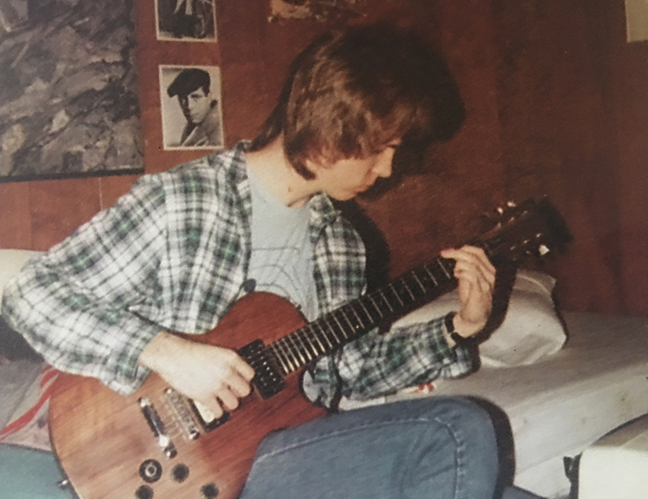

Depression & Recognition
Milan Kundera once said that writers write so that their families will listen to them. Todd's waning capacity to hear what I was actually saying proves in part that Kundera is right. But even outside my relationship with my brother, I have a growing feeling that my accomplishments in my family's eyes have not seemed as notable as Todd's, my problems not as severe.
My freshman year in high school, I brought home a paper on the guitarist Jeff Beck, showed it to my mother, who, in turn, shared my teacher Mr. Terzi's praise with my father. Without reading the paper, he said he had seen both my writing and Todd's writing before (we were both, five years apart, students in his Confirmation class), and that he couldn't see what the teachers who praised me were seeing. Todd, on the other hand, could write a thoughtful paper.
During a recent visit to my parents' home in Georgia, I wanted to share with my father my thoughts into how much depression has influenced my emotional reality for the bulk of my life. When I tried to broach the subject—why I missed so much school, why I frequently didn't feel like I deserved my allowance or birthday presents, why I never completed Confirmation class, why I gave up on the piano—he simply responded, "Maybe, but your depression hasn't been as serious as your brother's."
There's a reason why there are so few bass solos in popular music or jazz. The thickness of the strings, the potential for literal inaudibility in the mix, forces the good bass player to choose notes judiciously, tactfully. The conversation with my father was one of the few moments when my concerns actually welled up to the surface and passed through their own minor 7th, the blue note. But, in my father's ears, they quickly resumed the supporting line to the Billie Holiday of Todd's life…the pills, the booze, the time in psychiatric hospitals…the markers of the real blues. My mistake, it seems, has been to manage my problems so artfully.